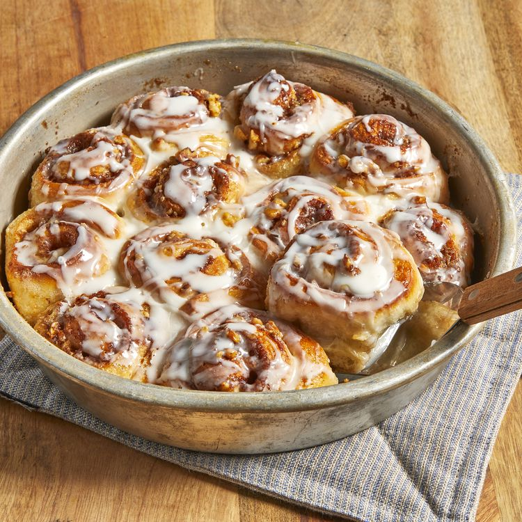

Easy Cinnamon Rolls

Description
A cinnamon roll consists of a rolled sheet of yeast-leavened dough onto which a cinnamon and sugar mixture (and raisins or other ingredients in some cases) is sprinkled over a thin coat of butter. The dough is then rolled, cut into individual portions and baked. The deep fried version is cinnamon roll or cinnamon bun doughnut. Its main ingredients are flour, cinnamon, sugar, and butter, which provide a robust and sweet flavor.
Ingredients
1 (1 pound) loaf frozen bread dough, thawed
3 tablespoons butter, melted
2/3 cup brown sugar
1/2 cup chopped walnuts
1 teaspoon ground cinnamon
1 teaspoon water, or as needed
1/3 cup heavy whipping cream
2/3 cup sifted confrctioners sugar
2 tablespoon milk
1 dash vanilla extract
Steps
- Lightly grease 2 round cake pans with butter.
- Roll bread dough out to an 6x18-inch rectangle. Brush with melted butter. COmbine brown sugar, walnuts, and cinnamon in a small bowl; sprinkle over butter. Roll dough into a log, starting at the long edge. Moisten edge with water and seal. Cut log into 20 slices; arrange rolls, cut sides down, in prepared cake pans. Cover with a towel and let rise in a warm place until doubled in volume, about 90 minutes.
- Preheat oven to 350 degree F(175 degrees C). Pour heavy cream over dough.
- Bake in preheat oven until golden broen, about 25 minutes.
- Mix confectioner's sugar, milk, vnailla extract in a small bowl; drizzle over warm cinnamon rolls to serve